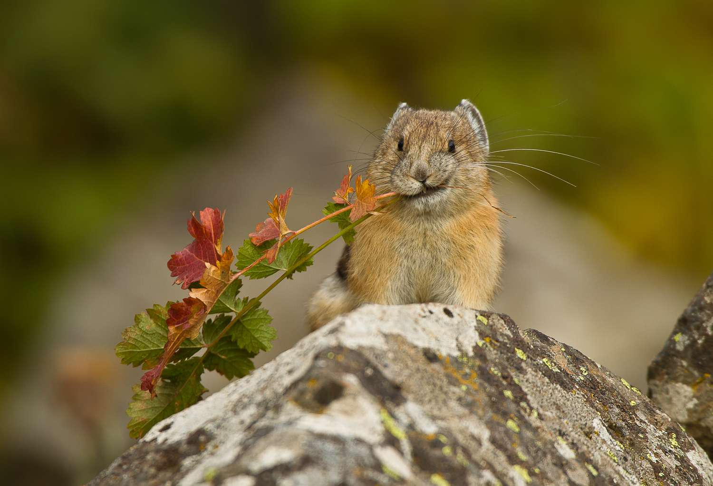
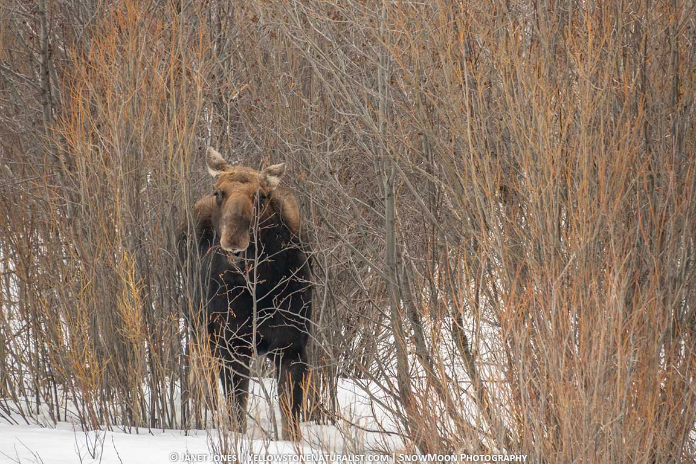

Mammals in high mountain areas are drastically affected by climate change because of the rate and speed at which change is occurring. Global warming is happening too fast for animals to effectively adapt to the temperature shifts causing physical/behavioral differences among species that haven’t been observed before. Furthermore, decreased snowpack has negatively impacted the populations of small mammals. According to an interview with Peter Billman, an ecologist who studied mountain pikas in the Rocky Mountains, the rate and speed of climate change is too fast for animals to effectively adapt their mechanisms. Many mountain species have lived through fluctuations of climate in the past (e.g the ice age), but the current speed of global warming is something they have never dealt with (Billman). The Yale School of the Environment published a paper by Jim Robbins which outlined a variety of animals and plants around the world who have suffered from heat stress. In this article, Robbins presents how extreme temperatures are a catalyst for growing numbers of extinctions, including mammals and birds in Australia, Africa, and North America (Robbin). Besides extinction, increased temperatures have created “forced adaptation,” or in other words, changes in appearance or behavior that haven’t been seen before which are born out of necessity to survive changing environmental factors.. For instance, some animals have decreased in size, a physical change, in order to dissipate heat faster and simply not die of heat stress. Take the North American Moose as an example. Over the last four decades, moose skulls in Michigan and the Appalachian regions have shrunk by about 16 percent – 19 percent among males and 13 percent among females — while average winter temperatures have increased significantly (Siber). A behavioral change is how marmots in the Rockies have begun to breed around 38 days earlier in the spring than around 30 years ago because of warmer temperatures and the earlier streamflows and birds have begun to migrate earlier, also because of the warmer temperatures (Billman).

However, when these marmots breed or these birds migrate to their destination earlier there isn’t substantial enough snowmelt and foraging opportunities despite the warmer average temperatures. In turn, this leads to population decline and inconsistent behavioral patterns among birds and mammals alike. Simply put, climate change has the ability to kill species off, or at the very least, force them to adapt in new, and potentially dangerous ways that haven’t been seen before. Besides adaptation measures, animals such as the Mountain Pika and marmots have suffered because of the effect these increased temperatures have had on the snowpack. For instance, in the North Cascades, some years have seen little to no snow on the bottom half alpine regions while there was snowpack on the top half of these areas. In these years, populations of Pikas and Marmots plummeted close to or at zero in the lower regions which held no snow, while the regions with snowpack had relatively unaffected populations (Billman). Many small mammals, like Pikas and Marmots, hibernate or live in the snowpack during the winter where there is a buffer from the extreme temperatures and weather on the surface. For instance, it could be -5 degrees above the snowpack. But ten inches into the snowpack where marmots have their burrows, it could be fifty degrees. These animals need the buffer against the extreme temps, so when the snowpack is less or none, they tend to die out and go extinct, or at least plummet in population (Billman). Species in mountain areas are either drastically changed, or are unable to survive the effects of climate change as they experience global warming. As Peter Billman, believes, we must focus efforts into the conservation of the biodiversity and the animals who are continuously at threat in these systems. As birds and mammals in the Andes have gone extinct, and we study other biophysical impacts of climate change, we have continued to ignore the plight that is threatening these fragile ecosystems despite the evidence and visible impacts we can see on animals.